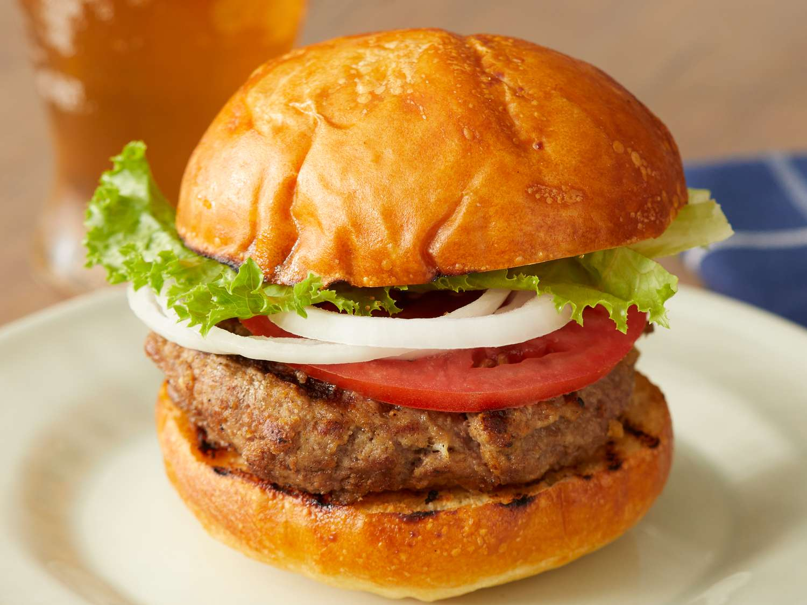

Delicious Burger Recipe

A burger is a popular sandwich consisting of a cooked patty, usually made of ground beef, placed inside a sliced
bun.
It is often garnished with lettuce, tomato, cheese, pickles, onions, and condiments like ketchup and mustard.
Ingredients:
- 1 lb ground beef
- 4 burger buns
- 4 slices of cheese (optional)
- Lettuce leaves
- 1 tomato, sliced
- 1 small onion, sliced
- Pickles
- Ketchup and mustard
- Salt and pepper to taste
Instructions:
- Preheat your grill or skillet to medium-high heat.
- In a bowl, season the ground beef with salt and pepper. Divide it into 4 equal portions and shape them into patties.
- Cook the patties on the grill or skillet for about 4-5 minutes on each side, or until they reach your desired level of doneness.
- If using cheese, place a slice on each patty during the last minute of cooking to melt.
- Toast the burger buns lightly on the grill or skillet.
- Assemble the burgers by placing the cooked patties on the bottom buns. Add lettuce, tomato slices, onion slices, pickles, and condiments as desired.
- Top with the other half of the bun and serve immediately.